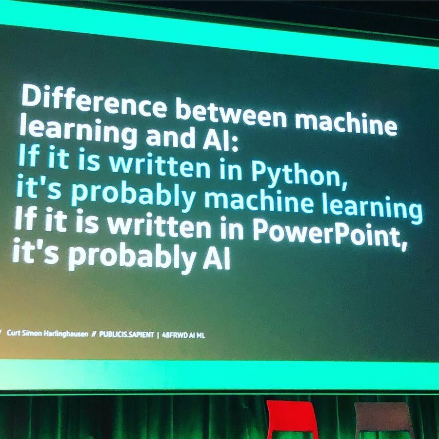

Og hvordan vi skuffer dem
2024-11-26
{https://x.com/marcobravoram/status/1241781966497710080}
https://serokell.io/files/no/no39r3xi.2_(3)_(1).png
https://commons.wikimedia.org/wiki/File:HAL9000.svg
chatty
Afløsningsopgaven som eksamensform er død.
De skal have fundamentet på plads
Så de kan bruge værktøjet fornuftigt
De tror de kan få maskinen til at lave arbejdet for dem.
At de kan få maskinen til at hjælpe dem med at lave arbejdet.